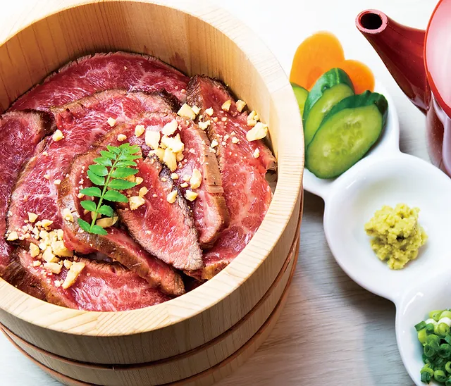

きっかけは高校生の時に祖父から教えてもらったことがきっかけです それからは親の実家にみんな集まったら必ず麻雀をしています
FPS「ファーストパーソン・シューティングゲーム」の略で主に敵を倒していくゲームです。 その中でも最近は Valorant というゲームにハマってます
食べることが好きで色んな所に食べに行ってます
最近だと、京都河原町にある 肉奉行 牛光
に行きました。こちらのお店は肉まぶしが大人気で
予約はしてから半年もかかるほどです。レアな肉とソースがいい感じにマッチしててすごく美味しかったので是非お勧めです!!
この４つの中で一番好きなことです！ 一日の疲れがすべて吹っ飛ぶ幸せな時間です。 自分は一回も起こされなかったら15時間は平気で寝れる体質なので、 夜寝て起きたらもう夕方とか夜何てこと休日だと平気であります